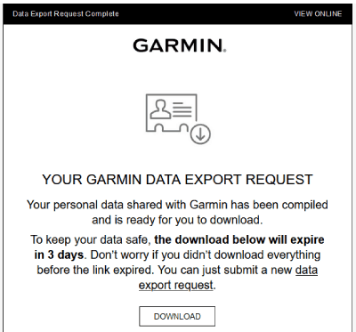
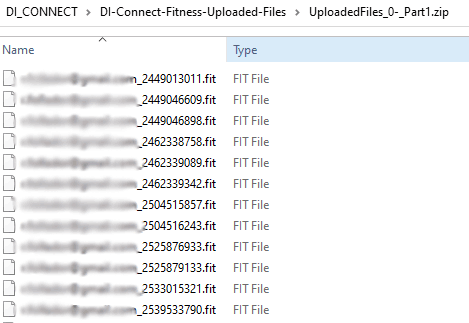
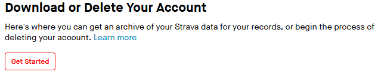
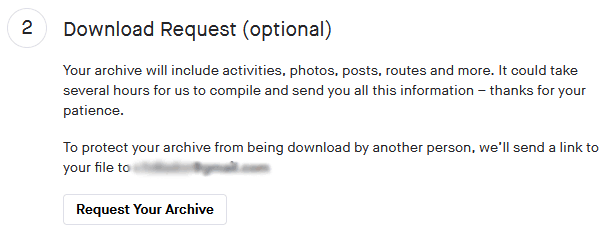
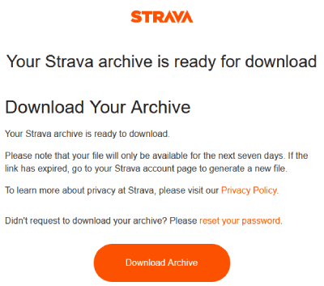
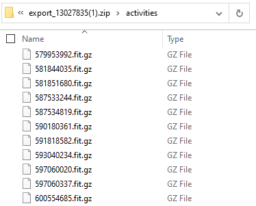

Exporting all Data from Garmin and Strava (Bulk Download)
This guide explains how to export all activity files from third parties (such as Garmin and Strava) in bulk and upload them into Cubetrek.
Garmin (Garmin Connect)
Garmin unfortunately hides the option to bulk download your FIT files quite well.
- Go to https://www.garmin.com/account/datamanagement/ and log in using your Garmin Connect account and password
- Click on Export Your Data
- Click on Request Data Export
- Now wait... It can take several days to get the data.
- You will receive an email from Garmin (on your mail account associated with your Garmin Connect Account); make sure to check your Spam folder (or social folder in Gmail)
 - Click the Download link and download the Zip File
- Now, you can log in to CubeTrek and drag-and-drop the Zip-Archive into https://cubetrek.com/upload/
If you want to extract particular Activity files, follow the steps below:
- Open or Unzip your Zip-File and navigate to: DI_CONNECT > DI-Connect-Fitness-Uploaded-Files
- There's another Zip file hiding in there, called e.g. UploadedFiles_0-Part1.zip
- That's it, that's where all the FIT files are hiding.
 - You can log in to CubeTrek and drag-and-drop single FIT files into https://cubetrek.com/upload/
Strava
Strava makes it slightly easier to download your activity data in bulk, but still hides the option behind a scary "Delete Your Account"-Button.
- Log into Strava and on your profile picture go to Settings > My Account (or click here: https://www.strava.com/account)
- At the very bottom, there's a section called Download or Delete Your Account
 - Click on Get Started (don't worry, this will not delete your account)
- On Step 2 Download Request (optional), click on Request Your Archive
 - Within a couple of hours, you will receive an email from Strava (make sure to check your Spam folder, or Social folder in Gmail)
 - Click on Download Archive and save the Zip File
- Now, you can log in to CubeTrek and drag-and-drop the Zip-Archive into https://cubetrek.com/upload/
If you want to extract particular Activity files, follow the steps below:
- Open or Unzip your Zip-File and navigate to the subfolder activities, this is where all the Gzipped FIT and GPX files are stored.
 - You can log in to CubeTrek and drag-and-drop the Zip-Archive into https://cubetrek.com/upload/
Polar
Polar provides some type of bulk download including instructions, but the Zip-Archive contains the activity data in a Polar-proprietary JSON format, no FIT or GPX files or anything ☹️.
If you know how to bulk download Polar Activity data in a usable format, let me know.